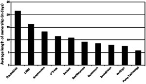
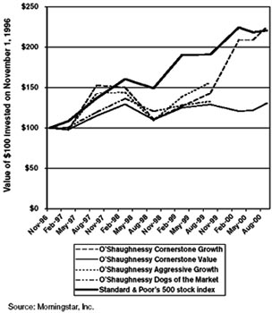

All of human unhappiness comes from one single thing: not knowing how to remain at rest in a room.
—Blaise Pascal
W hy do you suppose the brokers on the floor of the New York Stock Exchange always cheer at the sound of the closing bell—no matter what the market did that day? Because whenever you trade, they make money—whether you did or not. By speculating instead of investing, you lower your own odds of building wealth and raise someone else’s.
Graham’s definition of investing could not be clearer: “An investment operation is one which, upon thorough analysis, promises safety of principal and an adequate return.” 1 Note that investing, according to Graham, consists equally of three elements:
An investor calculates what a stock is worth, based on the value of its businesses. A speculator gambles that a stock will go up in price because somebody else will pay even more for it. As Graham once put it, investors judge “the market price by established standards of value,” while speculators “base [their] standards of value upon the market price.” 2 For a speculator, the incessant stream of stock quotes is like oxygen; cut it off and he dies. For an investor, what Graham called “quotational” values matter much less. Graham urges you to invest only if you would be comfortable owning a stock even if you had no way of knowing its daily share price. 3
Like casino gambling or betting on the horses, speculating in the market can be exciting or even rewarding (if you happen to get lucky). But it’s the worst imaginable way to build your wealth. That’s because Wall Street, like Las Vegas or the racetrack, has calibrated the odds so that the house always prevails, in the end, against everyone who tries to beat the house at its own speculative game.
On the other hand, investing is a unique kind of casino—one where you cannot lose in the end, so long as you play only by the rules that put the odds squarely in your favor. People who invest make money for themselves; people who speculate make money for their brokers. And that, in turn, is why Wall Street perennially downplays the durable virtues of investing and hypes the gaudy appeal of speculation.
Confusing speculation with investment, Graham warns, is always a mistake. In the 1990s, that confusion led to mass destruction. Almost everyone, it seems, ran out of patience at once, and America became the Speculation Nation, populated with traders who went shooting from stock to stock like grasshoppers whizzing around in an August hay field.
People began believing that the test of an investment technique was simply whether it “worked.” If they beat the market over any period, no matter how dangerous or dumb their tactics, people boasted that they were “right.” But the intelligent investor has no interest in being temporarily right. To reach your long-term financial goals, you must be sustainably and reliably right. The techniques that became so trendy in the 1990s—day trading, ignoring diversification, flipping hot mutual funds, following stock-picking “systems”—seemed to work. But they had no chance of prevailing in the long run, because they failed to meet all three of Graham’s criteria for investing.
To see why temporarily high returns don’t prove anything, imagine that two places are 130 miles apart. If I observe the 65-mph speed limit, I can drive that distance in two hours. But if I drive 130 mph, I can get there in one hour. If I try this and survive, am I “right”? Should you be tempted to try it, too, because you hear me bragging that it “worked”? Flashy gimmicks for beating the market are much the same: In short streaks, so long as your luck holds out, they work. Over time, they will get you killed.
In 1973, when Graham last revised The Intelligent Investor, the annual turnover rate on the New York Stock Exchange was 20%, meaning that the typical shareholder held a stock for five years before selling it. By 2002, the turnover rate had hit 105%—a holding period of only 11.4 months. Back in 1973, the average mutual fund held on to a stock for nearly three years; by 2002, that ownership period had shrunk to just 10.9 months. It’s as if mutual-fund managers were studying their stocks just long enough to learn they shouldn’t have bought them in the first place, then promptly dumping them and starting all over.
Even the most respected money-management firms got antsy. In early 1995, Jeffrey Vinik, manager of Fidelity Magellan (then the world’s largest mutual fund), had 42.5% of its assets in technology stocks. Vinik proclaimed that most of his shareholders “have invested in the fund for goals that are years away…. I think their objectives are the same as mine, and that they believe, as I do, that a long-term approach is best.” But six months after he wrote those high-minded words, Vinik sold off almost all his technology shares, unloading nearly $19 billion worth in eight frenzied weeks. So much for the “long term”! And by 1999, Fidelity’s discount brokerage division was egging on its clients to trade anywhere, anytime, using a Palm handheld computer—which was perfectly in tune with the firm’s new slogan, “Every second counts.”
FIGURE 1-1
Stocks on Speed

And on the NASDAQ exchange, turnover hit warp speed, as Figure 1-1 shows. 4
In 1999, shares in Puma Technology, for instance, changed hands an average of once every 5.7 days. Despite NASDAQ’s grandiose motto—“The Stock Market for the Next Hundred Years”—many of its customers could barely hold on to a stock for a hundred hours.
Wall Street made online trading sound like an instant way to mint money: Discover Brokerage, the online arm of the venerable firm of Morgan Stanley, ran a TV commercial in which a scruffy tow-truck driver picks up a prosperous-looking executive. Spotting a photo of a tropical beachfront posted on the dashboard, the executive asks, “Vacation?” “Actually,” replies the driver, “that’s my home.” Taken aback, the suit says, “Looks like an island.” With quiet triumph, the driver answers, “Technically, it’s a country.”
The propaganda went further. Online trading would take no work and require no thought. A television ad from Ameritrade, the online broker, showed two housewives just back from jogging; one logs on to her computer, clicks the mouse a few times, and exults, “I think I just made about $1,700!” In a TV commercial for the Waterhouse brokerage firm, someone asked basketball coach Phil Jackson, “You know anything about the trade?” His answer: “I’m going to make it right now.” (How many games would Jackson’s NBA teams have won if he had brought that philosophy to courtside? Somehow, knowing nothing about the other team, but saying, “I’m ready to play them right now,” doesn’t sound like a championship formula.)
By 1999 at least six million people were trading online—and roughly a tenth of them were “day trading,” using the Internet to buy and sell stocks at lightning speed. Everyone from showbiz diva Barbra Streisand to Nicholas Birbas, a 25-year-old former waiter in Queens, New York, was flinging stocks around like live coals. “Before,” scoffed Birbas, “I was investing for the long term and I found out that it was not smart.” Now, Birbas traded stocks up to 10 times a day and expected to earn $100,000 in a year. “I can’t stand to see red in my profit-or-loss column,” Streisand shuddered in an interview with Fortune. “I’m Taurus the bull, so I react to red. If I see red, I sell my stocks quickly.” 5
By pouring continuous data about stocks into bars and barbershops, kitchens and cafés, taxicabs and truck stops, financial websites and financial TV turned the stock market into a nonstop national video game. The public felt more knowledgeable about the markets than ever before. Unfortunately, while people were drowning in data, knowledge was nowhere to be found. Stocks became entirely decoupled from the companies that had issued them—pure abstractions, just blips moving across a TV or computer screen. If the blips were moving up, nothing else mattered.
On December 20, 1999, Juno Online Services unveiled a trailblazing business plan: to lose as much money as possible, on purpose. Juno announced that it would henceforth offer all its retail services for free—no charge for e-mail, no charge for Internet access—and that it would spend millions of dollars more on advertising over the next year. On this declaration of corporate hara-kiri, Juno’s stock roared up from $16.375 to $66.75 in two days. 6
Why bother learning whether a business was profitable, or what goods or services a company produced, or who its management was, or even what the company’s name was? All you needed to know about stocks was the catchy code of their ticker symbols: CBLT, INKT, PCLN, TGLO, VRSN, WBVN. 7 That way you could buy them even faster, without the pesky two-second delay of looking them up on an Internet search engine. In late 1998, the stock of a tiny, rarely traded building-maintenance company, Temco Services, nearly tripled in a matter of minutes on record-high volume. Why? In a bizarre form of financial dyslexia, thousands of traders bought Temco after mistaking its ticker symbol, TMCO, for that of Ticketmaster Online (TMCS), an Internet darling whose stock began trading publicly for the first time that day. 8
Oscar Wilde joked that a cynic “knows the price of everything, and the value of nothing.” Under that definition, the stock market is always cynical, but by the late 1990s it would have shocked Oscar himself. A single half-baked opinion on price could double a company’s stock even as its value went entirely unexamined. In late 1998, Henry Blodget, an analyst at CIBC Oppenheimer, warned that “as with all Internet stocks, a valuation is clearly more art than science.” Then, citing only the possibility of future growth, he jacked up his “price target” on Amazon.com from $150 to $400 in one fell swoop. Amazon.com shot up 19% that day and—despite Blodget’s protest that his price target was a one-year forecast—soared past $400 in just three weeks. A year later, PaineWebber analyst Walter Piecyk predicted that Qualcomm stock would hit $1,000 a share over the next 12 months. The stock—already up 1,842% that year—soared another 31% that day, hitting $659 a share. 9
But trading as if your underpants are on fire is not the only form of speculation. Throughout the past decade or so, one speculative formula after another was promoted, popularized, and then thrown aside. All of them shared a few traits—This is quick! This is easy! And it won’t hurt a bit!—and all of them violated at least one of Graham’s distinctions between investing and speculating. Here are a few of the trendy formulas that fell flat:
FIGURE 1-2
What Used to Work on Wall Street…

As these examples show, there’s only one thing that never suffers a bear market on Wall Street: dopey ideas. Each of these so-called investing approaches fell prey to Graham’s Law. All mechanical formulas for earning higher stock performance are “a kind of self-destructive process—akin to the law of diminishing returns.” There are two reasons the returns fade away. If the formula was just based on random statistical flukes (like The Foolish Four), the mere passage of time will expose that it made no sense in the first place. On the other hand, if the formula actually did work in the past (like the January effect), then by publicizing it, market pundits always erode—and usually eliminate—its ability to do so in the future.
All this reinforces Graham’s warning that you must treat speculation as veteran gamblers treat their trips to the casino:
Just as sensible gamblers take, say, $100 down to the casino floor and leave the rest of their money locked in the safe in their hotel room, the intelligent investor designates a tiny portion of her total portfolio as a “mad money” account. For most of us, 10% of our overall wealth is the maximum permissible amount to put at speculative risk. Never mingle the money in your speculative account with what’s in your investment accounts; never allow your speculative thinking to spill over into your investing activities; and never put more than 10% of your assets into your mad money account, no matter what happens.
For better or worse, the gambling instinct is part of human nature—so it’s futile for most people even to try suppressing it. But you must confine and restrain it. That’s the single best way to make sure you will never fool yourself into confusing speculation with investment.